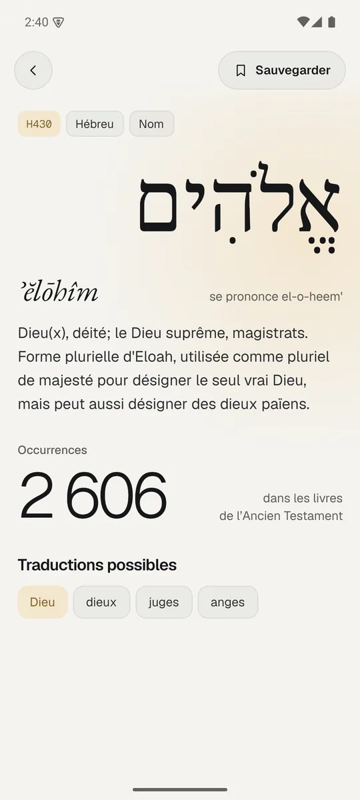
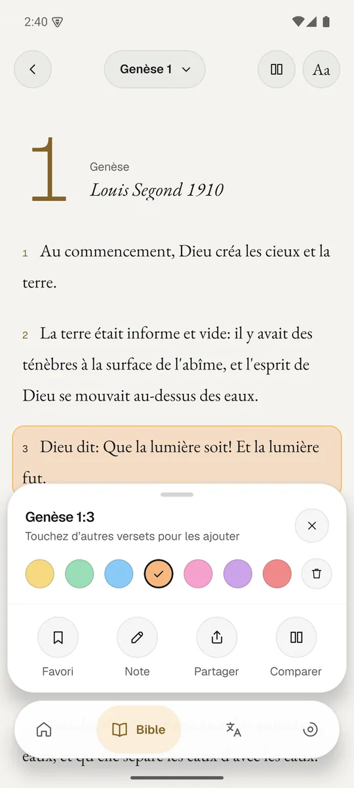
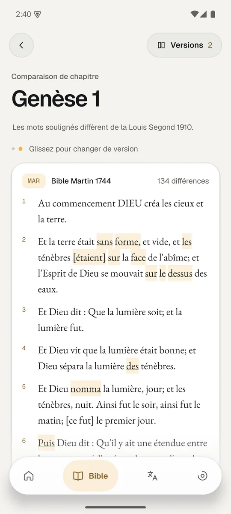
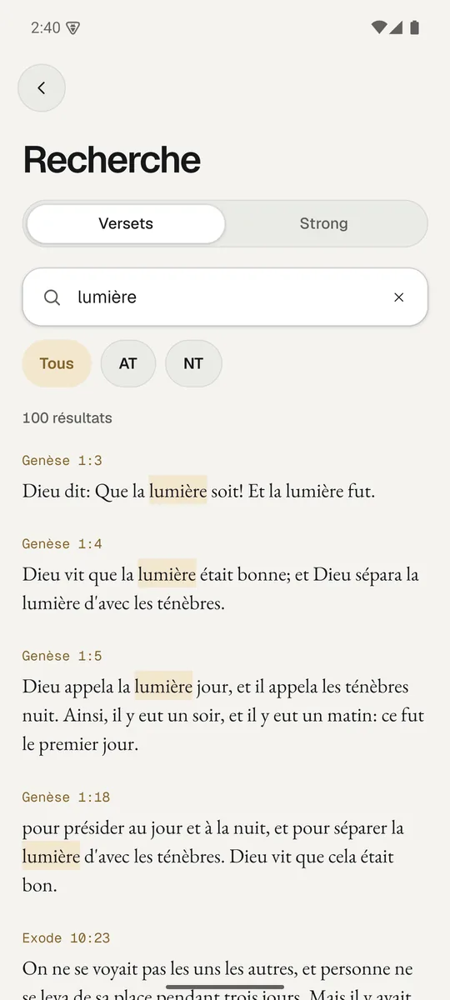
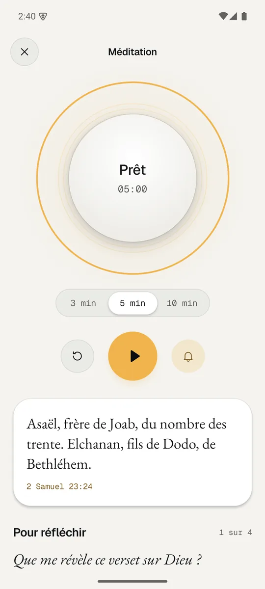
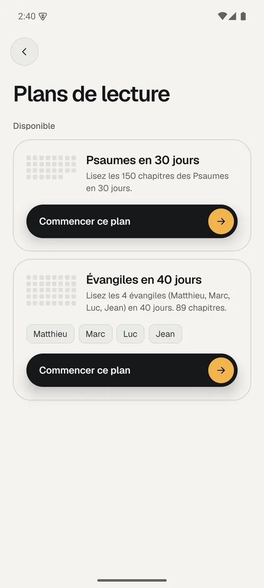

Pour l’Afrique francophone
Conçue à Abidjan pour les lecteurs d’Afrique de l’Ouest, là où les ressources d’étude biblique en français restent rares.
Application mobile · Version de test
Selah est une application de lecture et de méditation biblique pour les chrétiens francophones, pensée d’abord pour l’Afrique de l’Ouest. Elle fonctionne entièrement hors ligne.
Notre mission
Conçue à Abidjan pour les lecteurs d’Afrique de l’Ouest, là où les ressources d’étude biblique en français restent rares.
Les fiches Strong donnent, pour un mot hébreu ou grec, sa forme originale, sa translittération, sa prononciation et sa définition en français.
Toute la Bible est stockée sur le téléphone. Aucune donnée mobile n’est nécessaire pour lire, chercher ou méditer.
Fonctionnalités
En cours
Les fiches Strong et leur recherche sont en place, avec un premier échantillon de mots. L’étape suivante est d’intégrer le dictionnaire complet et un texte biblique annoté des numéros Strong, pour que chaque mot du lecteur devienne cliquable. C’est l’objet du partenariat avec Lueur.org.

Aperçu
Android, novembre 2026.





Technique
Les traductions sont importées dans la base locale au premier lancement, en quelques secondes. Ensuite, plus aucun accès réseau n’est nécessaire.
Un index plein texte couvre chaque verset de chaque traduction et ignore les accents.
Le schéma prévoit déjà de relier chaque mot du texte à son numéro Strong. Les données de Lueur.org s’y insèrent sans modifier l’application.
Partenariat
Selah prépare l’intégration des données Strong de Lueur.org : un texte biblique annoté des numéros Strong et le dictionnaire des définitions en français. Ce sont elles qui rendront chaque mot du lecteur cliquable vers son sens hébreu ou grec.
Feuille de route
Disponible en test
Lecture en plusieurs traductions, comparaison, recherche, méditation guidée, annotations, plans de lecture et statistiques.
En cours
Intégration des données de Lueur.org et mots cliquables dans le lecteur. Ressources d’étude : dictionnaire biblique et introductions aux livres.
Ensuite
Rappels de lecture, Bible audio en français, synchronisation optionnelle entre appareils, traductions supplémentaires.
Contact
Wilfried Da Cruz
Développeur de Selah · Abidjan, Côte d’Ivoire
Pour une démonstration, une version de test ou toute question sur le partenariat, je suis disponible pour un échange.
GitHub · willdev61